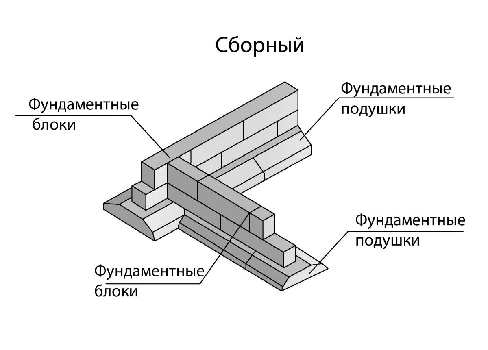

Использование железобетонного фундамента широко распространено в процессе строительства как промышленных и общественных зданий, так и сооружений жилого назначения. Существует три основных типа таких фундаментов: колонные или раздельные; ленточные; сплошные.
Колонный фундамент представляет собой конструкцию из железобетонных свай или колонн, которые по отдельности устанавливаются на несущих частях конструкции здания. Летночный тип железобетонного фундамента является самым популярным. Его обустройство основывается на возведении конструкции по периметру здания. Сплошной железобетонный фундамент устанавливается под всем зданием. Установка отдельных фундаментов является допустимой при наличии небольшой нагрузки и редкого расположения колонн.
Установка ленточного фундамента под колонным применяется в том случае, когда фундаментные подошвы находятся недалеко друг от друга. Данный факт наблюдается при сооружении здания на слабом грунте или при большой несущей нагрузке.
Средняя стоимость возведения железобетонного фундамента составляет от 5 до 7 % стоимости всех затрат на его сооружение. При тщательной проработке и правильном выборе типа фундамента достигается значительный экономичный эффект на постройку самого здания. При строительстве крупных сооружений конструкция фундамента выбирается в соотношении со стоимостью на расход материала и трудовых ресурсов при выполнении различного рода фундаментов.
